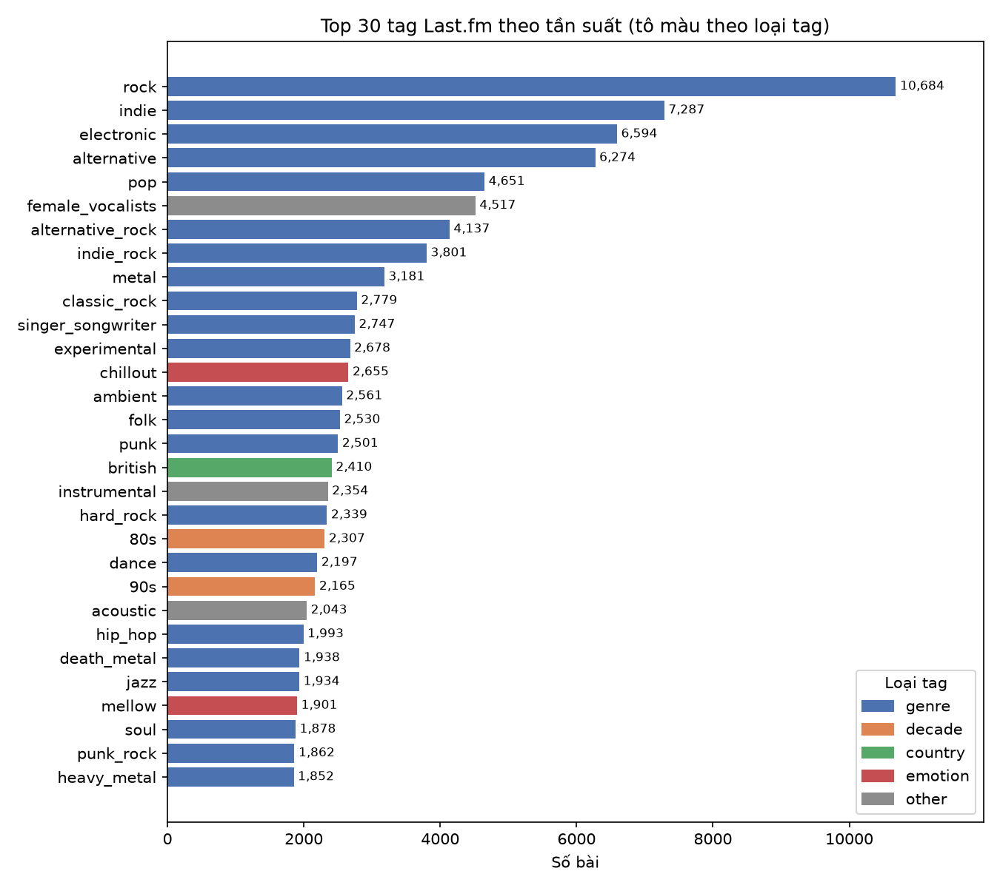
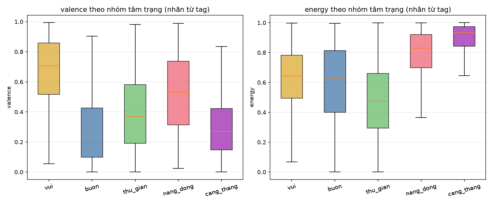
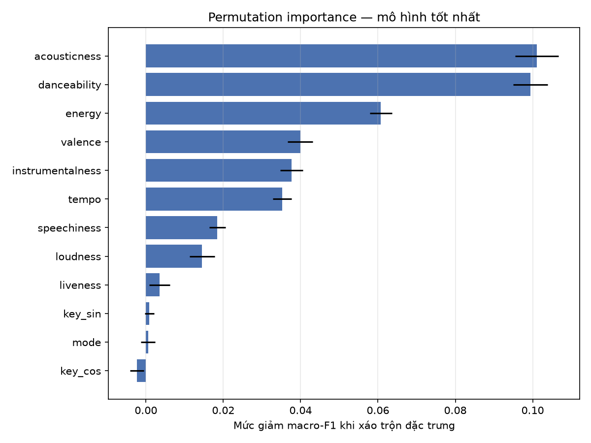
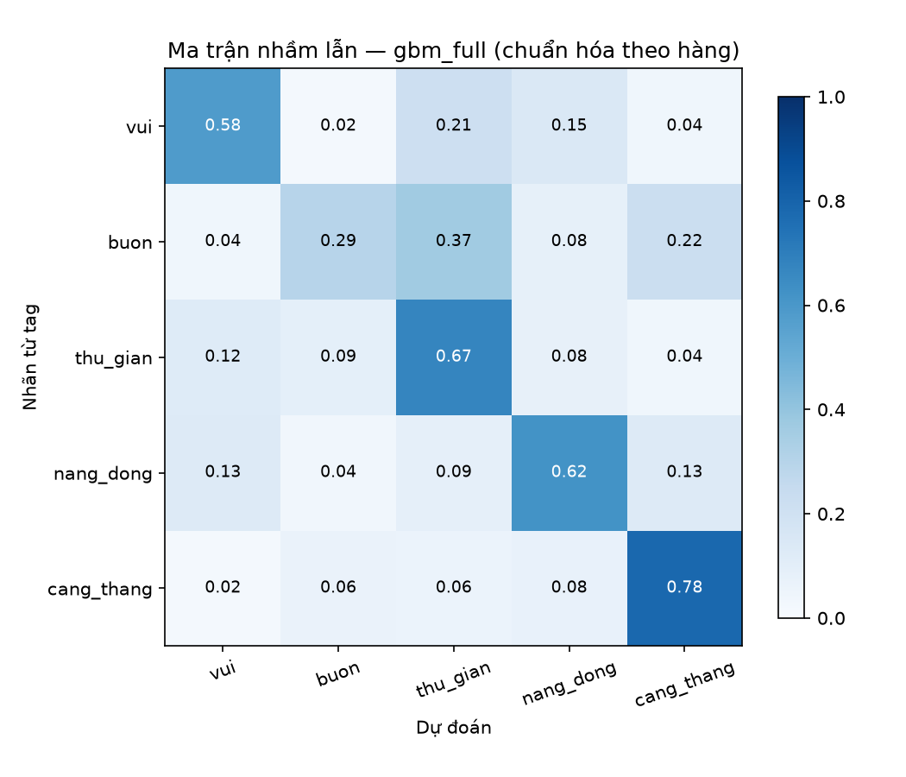
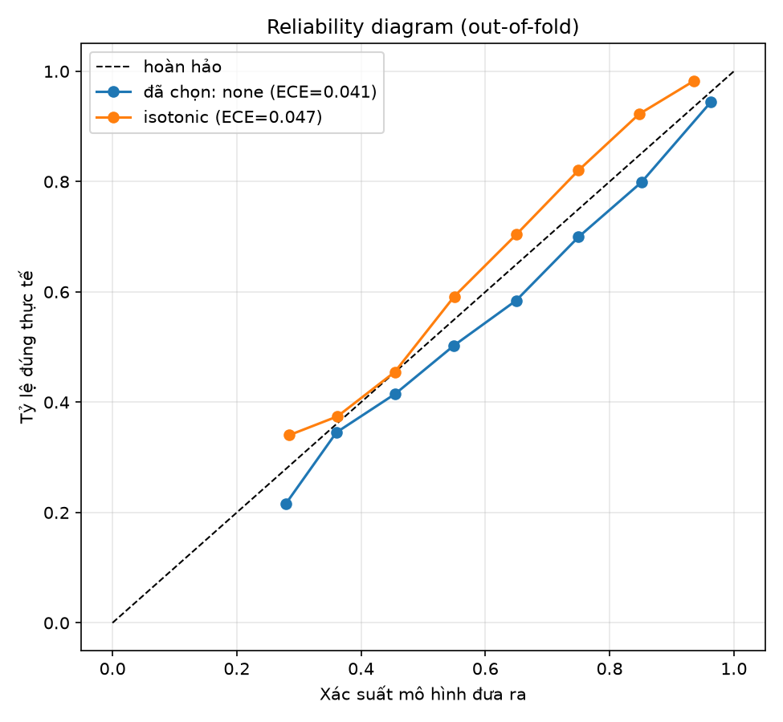
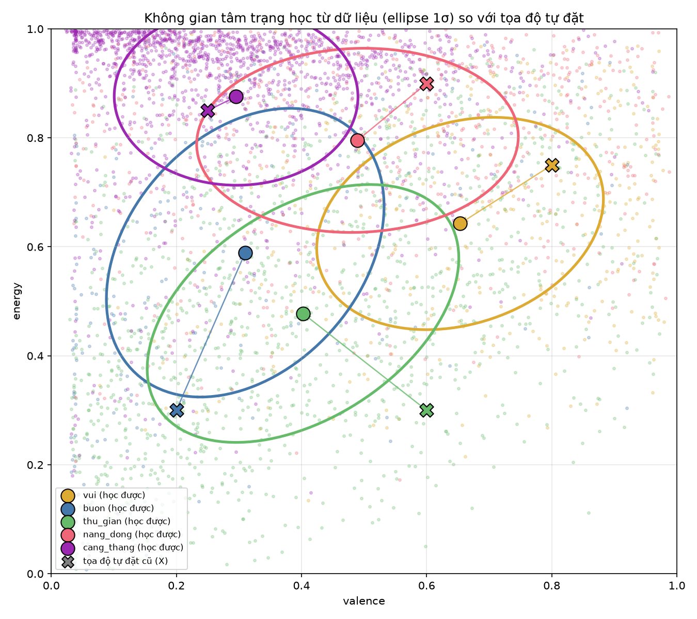
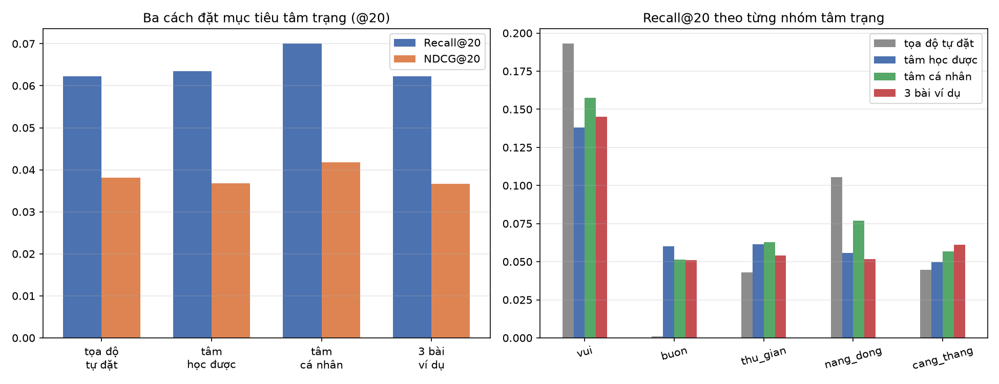
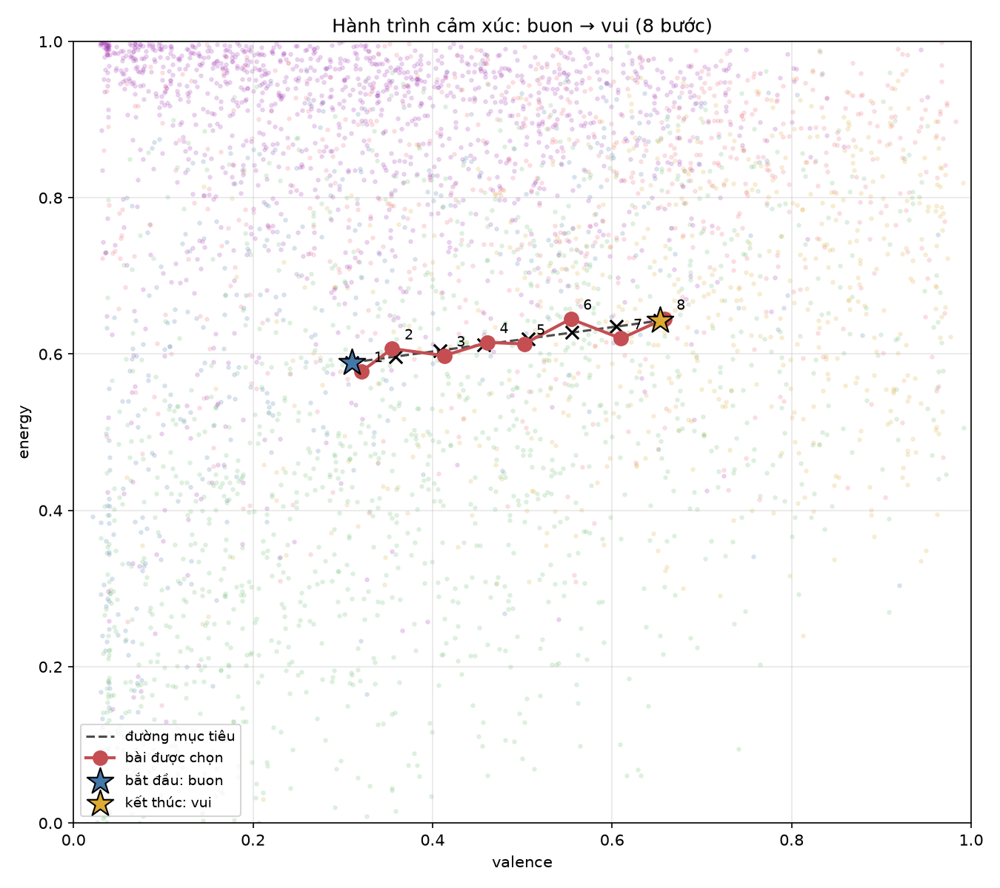
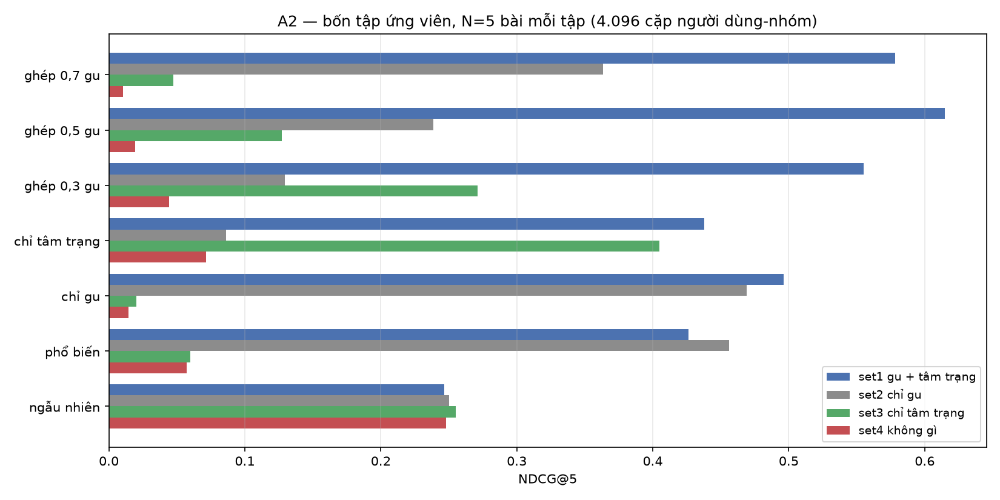

Sơ đồ tổng thể luồng xử lý
Tám bước T1–T8 nối thành một đường đi của dữ liệu: từ tag thô đến điểm tâm trạng mà mô hình gu của TV2 gọi được.
Chặng 1 — có nhãn (T1→T3): tag cho nhãn một nửa số bài, nửa đó dùng để dạy mô hình đoán tâm trạng chỉ từ âm thanh. Chặng 2 — phủ hết (T3→T4): mô hình điền tâm trạng cho nửa còn lại, trộn lại thành hồ sơ đủ 50.683 bài, rồi từ hồ sơ đó đo ra vị trí 5 nhóm. Chặng 3 — dùng được (T5→T7): thanh kéo và lịch sử nghe biến vị trí đó thành điểm số cho từng bài, cuối cùng xâu thành một hành trình.
Kiểm kê tag và rà dữ liệu
Trả lời câu hỏi nền tảng: tag Last.fm trong bộ dữ liệu này có đủ để sinh nhãn tâm trạng không?
Phân loại 100 tag
Bộ dữ liệu chỉ có đúng 100 tag khác nhau. Mỗi tag được xếp vào một loại theo thứ tự ưu tiên thập niên → quốc gia → thể loại → mô tả → cảm xúc.
| Loại tag | Số tag | Lượt gán | Ví dụ |
|---|---|---|---|
| Thể loại | 74 | 142.304 | rock (10.684), indie (7.287), electronic (6.594) |
| Mô tả (giọng hát, nhạc cụ) | 7 | 14.072 | female_vocalists (4.517), instrumental, acoustic, cover |
| Thập niên | 6 | 11.025 | 80s (2.307), 90s (2.165), oldies (1.422) |
| Cảm xúc | 5 | 9.697 | chillout, mellow, beautiful, love, chill |
| Quốc gia | 8 | 8.215 | british (2.410), american (1.423) |
Chỉ 5/100 tag là tag cảm xúc, và cả 5 nằm cùng một vùng valence–energy (valence 0,29–0,42; energy 0,44–0,56). 25 tag ứng viên trong cấu hình không hề tồn tại trong dữ liệu: happy, sad, angry, energetic, relaxing, upbeat, melancholy, aggressive…
Hệ quả: nếu chỉ dùng tag cảm xúc trực tiếp thì Thư giãn có 4.618 bài, Buồn 1.825 bài, còn Vui, Năng động, Căng thẳng đều 0 bài.

chillout và mellow.Rà bài nghi ghép nhầm phiên bản
Báo cáo EDA nghi ngờ vài bài phổ biến là bản cover. Kiểm chứng cho thấy cả hai bài được nêu
đều mang tag cover: bản “Bring Me To Life” của Katherine Jenkins có energy 0,563
trong khi bản gốc Evanescence là 0,930 — audio và tag lệch hẳn nhau.
| Dấu hiệu | Số bài | Mức | Xử lý |
|---|---|---|---|
Có tag cover | 953 | mạnh | loại khỏi huấn luyện |
| Tên chứa live / remix / remaster | 285 | mạnh | loại khỏi huấn luyện |
| Thời lượng bất thường | 118 | mạnh | loại khỏi huấn luyện |
spotify_id trùng | 18 | mạnh | loại khỏi huấn luyện |
| Lệch tag thập niên > 20 năm | 2.752 | yếu | chỉ ghi nhận |
| Trùng tên bài với nghệ sĩ khác | 1.614 | yếu | chỉ ghi nhận |
Nhãn yếu từ tag
Cải tiến 1: thay vì “bài có tag X thì thuộc nhóm Y”, mỗi bài nhận một phân phối xác suất trên 5 nhóm.
Bảng trọng số 53 tag
Vì ba nhóm không có tag cảm xúc nào, nhóm bổ sung tag thể loại mang cảm xúc rõ làm bằng chứng phụ với trọng số thấp hơn. Mọi tag đều có thật trong dữ liệu và có test chặn việc bịa tag.
4 tag trực tiếp × 1,0
chill, chillout, mellow, beautiful — tag cảm xúc thật của người nghe.
49 tag hỗ trợ × 0,5
reggae/ska/funk → Vui · house/techno/dance → Năng động · metalcore/death_metal → Căng thẳng · post_rock/emo/doom → Buồn.
Đã loại
love (hồ sơ âm thanh trùng trung bình chung) và psychedelic (là tên phong cách, không phải tâm trạng).
Nhãn mềm = tổng trọng số các tag của bài, chuẩn hóa về tổng bằng 1. Ví dụ bài có
chill + metal: Thư giãn 0,667 · Căng thẳng 0,233 · Năng động 0,100.
Kết quả trên 50.683 bài
| Nhóm | Số bài có nhãn | valence | energy | Tag dẫn dắt |
|---|---|---|---|---|
| Vui | 2.446 | 0,706 | 0,643 | soul, reggae, funk, ska |
| Buồn | 1.413 | 0,228 | 0,624 | post_rock, beautiful, emo, dark_ambient |
| Thư giãn | 8.562 | 0,369 | 0,474 | chillout, folk, acoustic, ambient |
| Năng động | 4.012 | 0,530 | 0,829 | dance, electro, techno, house |
| Căng thẳng | 10.319 | 0,271 | 0,933 | metal, death_metal, heavy_metal |
Với bảng trọng số ban đầu, nhóm Buồn chỉ được 60 bài vì không tag nào
cho nó trọng số trội — beautiful, dark_ambient, doom_metal, gothic
đều chia 50/50 với nhóm khác nên luôn thua argmax. Nhóm đã thử 5 phương án và chọn cách
tăng trọng số theo valence (tag valence càng thấp càng nghiêng về Buồn), giữ nguyên hai ngưỡng.
Kết quả: 60 → 1.413 bài, mọi nhóm đạt ngưỡng tối thiểu 300.
Kiểm định Kruskal–Wallis
Năm đặc trưng âm thanh đều khác nhau có ý nghĩa giữa các nhóm (p < 1e-300), nhưng thứ tự mới là điều đáng chú ý:
Valence tách nhóm yếu nhất trong năm đặc trưng — bằng chứng đầu tiên cho thấy thanh kéo chỉ dùng hai trục valence và energy đã bỏ sót thông tin.

Bộ phân loại từ đặc trưng âm thanh
Cải tiến 2: suy ra tâm trạng cho cả những bài không có tag. Đầu vào chỉ gồm 12 đặc trưng âm thanh, không dùng tag/genre/artist để tránh rò rỉ nhãn.
Đánh giá bằng GroupKFold 5 fold theo nghệ sĩ, nên cùng một nghệ sĩ không nằm ở cả tập huấn luyện và tập kiểm tra. Tập huấn luyện gồm 26.752 bài có nhãn cứng của 5.314 nghệ sĩ.
| Mô hình | Đặc trưng | macro-F1 | accuracy | log-loss | F1 Buồn |
|---|---|---|---|---|---|
| baseline_ve (tọa độ tự đặt) | 2 | 0,363 | 0,440 | 2,374 | 0,170 |
| logreg_ve | 2 | 0,441 | 0,524 | 1,201 | 0,195 |
| logreg_full | 12 | 0,516 | 0,595 | 1,042 | 0,241 |
| gbm_full (LightGBM) | 12 | 0,571 | 0,677 | 0,859 | 0,239 |
Thêm đặc trưng có đáng không?
Cùng Logistic Regression, macro-F1 tăng từ 0,441 lên 0,516 — +16,9% chỉ nhờ thêm 10 đặc trưng ngoài valence và energy.
Hơn baseline bao nhiêu?
So với cách gán nhóm theo tọa độ tự đặt: macro-F1 +57,4%, accuracy +53,9%, log-loss giảm 63,8%.
Đặc trưng nào thật sự mang cảm xúc?
Đo bằng mức giảm macro-F1 khi xáo trộn từng đặc trưng:
Acousticness và danceability quan trọng hơn cả energy, và gấp 2,5 lần valence.
Hai trục của thanh kéo cũ không phải hai đặc trưng mang cảm xúc mạnh nhất.
key và mode gần như vô dụng: giọng trưởng hay thứ không giúp đoán tâm trạng trong bộ dữ liệu này.


Đặc tả yêu cầu hiệu chỉnh isotonic. Khi chạy thật, cả isotonic lẫn sigmoid đều làm
F1 nhóm Buồn rơi từ 0,239 xuống 0,007 — nhóm này gần như không bao giờ được dự đoán nữa,
vì hiệu chỉnh triệt tiêu tác dụng của class_weight với nhóm nhỏ nhất. Đổi lại chỉ được log-loss
nhỉnh hơn, còn ECE lại xấu đi (0,041 → 0,047). Vì ECE của mô hình gốc đã tốt sẵn nên nhóm chọn
giữ nguyên xác suất không hiệu chỉnh và ghi rõ lý do trong nhật ký quyết định.

Hồ sơ mọi bài và không gian tâm trạng
Cải tiến 3: vị trí các nhóm trên thanh kéo được học từ dữ liệu thay vì đặt tay.
Hồ sơ tâm trạng cho cả 50.683 bài
Bài có nhãn tag sạch được trộn 70% nhãn người nghe với 30% dự đoán mô hình; các bài còn lại hoàn toàn do mô hình suy ra. Mỗi bài đúng một dòng, tổng xác suất bằng 1.
| Nguồn | Số bài | Tỷ lệ | Độ tự tin TB |
|---|---|---|---|
mood_source = tag | 26.752 | 52,8% | 0,768 |
mood_source = model | 23.931 | 47,2% | 0,616 |
Tâm học được so với tọa độ tự đặt
| Nhóm | Tâm học được | Tọa độ tự đặt | Lệch |
|---|---|---|---|
| Buồn | (0,310; 0,589) | (0,20; 0,30) | 0,309 |
| Thư giãn | (0,402; 0,478) | (0,60; 0,30) | 0,266 |
| Vui | (0,653; 0,643) | (0,80; 0,75) | 0,182 |
| Năng động | (0,490; 0,795) | (0,60; 0,90) | 0,152 |
| Căng thẳng | (0,295; 0,876) | (0,25; 0,85) | 0,052 |
Hai điểm đặt tay sai nhiều nhất: Buồn được đặt ở energy 0,30 nhưng nhạc buồn thật trong bộ này có energy 0,589 — post_rock, emo, doom metal đều là nhạc buồn nhưng mạnh. Thư giãn được đặt ở valence 0,60 nhưng thực tế chỉ 0,402, tức trầm hơn là tươi. Chỉ Căng thẳng là đoán gần đúng.

API bàn giao cho mô hình gu
Cải tiến 4: điểm hợp tâm trạng kết hợp xác suất nhóm với độ gần trên thanh kéo.
| Hàm | Công dụng | Kết quả thật |
|---|---|---|
quick_mood(code) | Nút chọn nhanh → điểm trên thanh kéo | (0,653; 0,643) |
slider_to_mood(v, e) | Điểm thanh kéo → xác suất 5 nhóm | (0,3; 0,9) → Căng thẳng 55% |
mood_scores(ids, v, e) | Độ hợp tâm trạng cho danh sách bài | 20.000 bài / 23 ms |
user_mood_target(...) | Mục tiêu cá nhân hóa theo từng người | xem T6 |
mood_journey(...) | Danh sách điểm đi từ tâm trạng A tới B | xem T7 |
Công thức chấm điểm
mood_score = 0,6 × p_target + 0,4 × prox, trong đó p_target là xác suất bài thuộc
các nhóm mà điểm thanh kéo đang nghiêng về (gián tiếp dùng cả 12 đặc trưng qua bộ phân loại),
còn prox là độ gần Gaussian trên mặt phẳng valence–energy. Nhờ vậy thanh kéo vẫn tinh chỉnh
liên tục được mà điểm số không chỉ phụ thuộc hai con số.
Thang điểm thực tế chỉ chạy trong khoảng 0,02–0,65 chứ không trải hết [0; 1], vì xác suất của
điểm thanh kéo luôn bị chia cho 5 nhóm. Khi trộn α × hợp_gu + (1 − α) × hợp_tâm_trạng,
cần chuẩn hóa hai vế trên tập ứng viên, nếu không α sẽ không đúng nghĩa tỷ trọng và phần tâm trạng bị lép vế.
Cá nhân hóa và đánh giá trên lịch sử nghe thật
Cải tiến 5: “vui” của người nghe rock khác “vui” của người nghe acoustic.
Tâm cá nhân được tính từ các bài user đã nghe thuộc nhóm đó, có trọng số theo số lần nghe,
rồi co về tâm chung theo số bài: μ' = (n·μ_user + 10·μ_chung) / (n + 10).
User càng ít dữ liệu thì càng nghiêng về tâm chung.
| Tham số đánh giá | Giá trị |
|---|---|
| Lọc 10/10 | 7.051.696 lượt nghe · 290.898 user · 24.286 bài |
| User test | 20% (seed 42), lấy mẫu 2.000 → 1.269 user đủ điều kiện |
| Che dữ liệu | 30% số bài mỗi user |
| Trường hợp đánh giá | 1.890 cặp (user, nhóm) có ít nhất 3 bài bị che |
| Ứng viên mỗi lượt | bài bị che + 1.000 bài chưa nghe |
| Cách đặt mục tiêu | Recall@10 | NDCG@10 | Recall@20 | NDCG@20 |
|---|---|---|---|---|
| Tọa độ tự đặt | 0,0365 | 0,0280 | 0,0622 | 0,0382 |
| Tâm học được | 0,0315 | 0,0239 | 0,0635 | 0,0368 |
| Tâm cá nhân | 0,0390 | 0,0292 | 0,0701 | 0,0417 |
Riêng tâm học được chưa chắc tốt hơn tọa độ tự đặt: hơn ở Recall@20 (+2,0%) nhưng thua ở Recall@10 (−13,7%) và NDCG@20 (−3,7%). Nhìn theo từng nhóm mới thấy lý do.
| Nhóm | Tự đặt | Học được | Cá nhân | Nhận xét |
|---|---|---|---|---|
| Buồn | 0,0011 | 0,0603 | 0,0514 | tọa độ tự đặt gần như vô dụng, tâm học được tăng 55 lần |
| Vui | 0,1932 | 0,1380 | 0,1575 | điểm tự đặt ở góc cực đoan nên kéo đúng bài cực đoan lên |
| Năng động | 0,1055 | 0,0558 | 0,0768 | cá nhân hóa bù lại được một phần |
| Thư giãn | 0,0431 | 0,0613 | 0,0626 | cá nhân hóa tốt nhất |
| Căng thẳng | 0,0446 | 0,0495 | 0,0567 | cá nhân hóa tốt nhất |

Hành trình cảm xúc
Phần tùy chọn: playlist chuyển dần từ tâm trạng hiện tại sang tâm trạng mong muốn.
Đoạn thẳng nối tâm nhóm Buồn (0,310; 0,589) tới tâm nhóm Vui (0,653; 0,643) được chia thành 8 điểm.
Mỗi điểm chọn bài có mood_score cao nhất chưa được chọn, trên toàn bộ 50.683 bài.
Cột số là valence của bài được chọn: tăng dần từ 0,321 lên 0,658, nhóm chuyển Buồn → Thư giãn → Vui mà không nhảy cóc. Mỗi bài cách điểm mục tiêu dưới 0,02 trên cả hai trục.

Tính năng này cần một không gian tâm trạng liên tục và một hàm chấm điểm liên tục, nên cách làm cũ là lọc bài theo nhãn có sẵn không thể làm được. Hạn chế: đường đi là đoạn thẳng, với cặp nhóm xa nhau thì các bước giữa có thể rơi vào vùng thưa bài; và nó mới chỉ chấm theo tâm trạng, chưa ghép độ hợp gu.
Tổng kết
Bốn câu hỏi kiểm chứng đặt ra từ đầu và câu trả lời bằng số liệu.
1. Valence và energy có tách được nhóm không?
Có, nhưng valence là đặc trưng tách nhóm yếu nhất trong năm đặc trưng được kiểm định (H = 4.819 so với acousticness 13.660).
2. Thêm đặc trưng cải thiện bao nhiêu?
macro-F1 từ 0,441 lên 0,516 với cùng một thuật toán (+16,9%), lên 0,571 với LightGBM (+29,4%).
3. So với baseline tọa độ tự đặt?
macro-F1 từ 0,363 lên 0,571, hơn 57,4%; accuracy 0,440 → 0,677.
4. Cá nhân hóa có cải thiện không?
Có, trên lịch sử nghe thật: Recall@20 +12,6%, NDCG@20 +9,2%, và tốt hơn baseline ở cả bốn chỉ số.
File bàn giao
| File | Cho ai | Nội dung |
|---|---|---|
track_mood.parquet | Mô hình gu | hồ sơ tâm trạng 50.683 bài: xác suất 5 nhóm, nhóm dự đoán, độ tự tin, nguồn nhãn |
mood_centroids.json | Mô hình gu | tâm và hiệp phương sai 5 nhóm — vị trí nút chọn nhanh và thanh kéo |
src/mood/api.py | Mô hình gu | 5 hàm công khai, không còn hàm nào chưa cài |
track_mood_labels.parquet | Dữ liệu & đánh giá | nhãn từ tag kèm trạng thái nhãn, để đánh giá có điều kiện tâm trạng |
tag_audit.csv, suspect_tracks.csv | Dữ liệu & đánh giá | kiểm kê 100 tag và 5.263 bài nghi ghép nhầm phiên bản |
models/mood_classifier.joblib | Nội bộ | LightGBM đã huấn luyện kèm danh sách cột đặc trưng |
Ghép với mô hình gu: bốn tập ứng viên
Khung đánh giá lấy từ Hausberger, Jósár & Schedl (NLP4MusA 2026). Trả lời câu hỏi hội đồng chắc chắn hỏi: mô hình tâm trạng có thêm được gì so với mô hình gu, hay chỉ đang nói lại điều mô hình gu đã biết?
Recall@20 ở T6 trộn hai thứ vào một con số: điểm cao có thể là nhờ mô hình gu đoán đúng, cũng có thể nhờ mô hình tâm trạng. Không tách ra được thì không chứng minh được mô-đun nào đang làm việc.
Thiết kế
Với mỗi cặp (người dùng, nhóm tâm trạng), kho nhạc chia thành bốn tập không giao nhau; lấy N bài mỗi tập, trộn lẫn thành 4N ứng viên, rồi đo NDCG@N riêng cho từng tập.
| Tập | Nghĩa | Nguồn bài |
|---|---|---|
set1 | đúng gu và đúng tâm trạng | bài bị che, mood_pred == m |
set2 | đúng gu, sai tâm trạng | bài bị che, mood_pred != m |
set3 | đúng tâm trạng, chưa từng nghe | kho nhạc, mood_pred == m |
set4 | sai cả hai | kho nhạc, mood_pred != m |
Mô hình gu là ALS của TV2, dùng nguyên không sửa: 50.000 user (20.000 test + 30.000 khác), 1.065.240 tương tác huấn luyện, và 145.227 tương tác bị che đã bị loại khỏi dữ liệu huấn luyện.
Kết quả — N = 5 bài mỗi tập, 4.096 cặp người dùng–nhóm
| Bộ xếp hạng | set1 gu+tâm trạng | set2 chỉ gu | set3 chỉ tâm trạng | set4 không gì |
|---|---|---|---|---|
| ngẫu nhiên | 0,2465 | 0,2503 | 0,2553 | 0,2480 |
| phổ biến (Pop) | 0,4263 | 0,4563 | 0,0600 | 0,0574 |
| chỉ gu (ALS) | 0,4961 | 0,4691 | 0,0202 | 0,0146 |
| chỉ tâm trạng | 0,4377 | 0,0863 | 0,4047 | 0,0713 |
| ghép 0,3 gu | 0,5550 | 0,1297 | 0,2710 | 0,0443 |
| ghép 0,5 gu | 0,6146 | 0,2387 | 0,1274 | 0,0193 |
| ghép 0,7 gu | 0,5784 | 0,3635 | 0,0476 | 0,0105 |

Bốn điều đọc được
Mô hình gu không phân biệt được tâm trạng
Chênh lệch set1 − set2 của chỉ-gu chỉ +0,0270; của Pop còn âm (−0,0300). Cả hai nâng bài người dùng thích, bất kể tâm trạng.
Mô hình tâm trạng không phân biệt được người dùng
0,4377 ở set1 và 0,4047 ở set3 — gần bằng nhau, tức là nó không biết bài nào thuộc gu ai.
Hai mô-đun không trùng lặp
Mỗi bên mạnh đúng chỗ bên kia yếu. Đây là bằng chứng số cho thấy mô-đun tâm trạng đáng có mặt.
Ghép lại thắng cả hai, trọng số 0,5 tốt nhất
set1 đạt 0,6146, hơn chỉ-gu +23,9%. Mức phân biệt tâm trạng tăng từ +0,027 lên +0,376.
Độ bền theo cỡ tập
| N bài/tập | số cặp | set1 chỉ gu | set1 ghép 0,5 | mức tăng | phân biệt tâm trạng |
|---|---|---|---|---|---|
| 3 | 12.697 | 0,4907 | 0,6035 | +23,0% | +0,3518 |
| 5 | 4.096 | 0,4961 | 0,6146 | +23,9% | +0,3759 |
| 10 (đúng cỡ bài gốc) | 584 | 0,5040 | 0,6337 | +25,7% | +0,4198 |
Nhãn mood_pred dùng để định nghĩa set1 và set3 do chính mô-đun này sinh ra. Nên A2 đo mức nhất quán giữa hồ sơ tâm trạng và hành vi nghe thật, chứ không chứng minh người dùng cảm nhận đúng nhóm đó. Muốn kết luận mạnh hơn cần nhãn độc lập hoặc khảo sát mù — đúng như mục 5 và 6 trong giao thức đánh giá của TV2.
Thử thay bảng trọng số tag bằng embedding
Nhóm Linz gán 32 ý định nghe mà không có nhãn nào: nhúng tên playlist và tên ý định, so cosine, rồi chuẩn hóa z-score theo từng ý định. Thử đúng cách đó cho bảng trọng số tag — vốn là điểm dễ bị chất vấn nhất của T2.
Vì sao đáng thử
Bảng trọng số 53 tag ở T2 do nhóm chỉnh tay, và đã phải can thiệp thủ công một lần vì nhóm Buồn chỉ còn 60 bài. Bước chuẩn hóa z-score theo từng nhóm của bài Linz đúng là thứ chữa bệnh đó một cách tự động: nó xóa độ lệch thang đo giữa các nhóm nên nhóm ít tín hiệu không bị nhóm mạnh át.
Chọn mô hình nhúng, và một thước đo khách quan
Mô hình đúng của bài gốc (google/embeddinggemma-300m) bị khóa trên HuggingFace. Ba mô hình mở được chấm bằng một thước không phụ thuộc bảng tay: mỗi tag có một vị trí (valence, energy) trung bình thật trong dữ liệu, nhóm “đúng” là tâm học được gần nhất.
Kết quả trên toàn bộ 50.683 bài
| Cách gán nhãn | số tag | bài có nhãn | khớp vị trí âm thanh | trùng nhãn với bảng tay | macro-F1 |
|---|---|---|---|---|---|
| bảng tay (T2) | 53 | 26.752 | 83,0% | — | 0,5711 |
| embedding argmax | 44 | 28.999 | 50,0% | 74,8% | 0,5327 |
| embedding soft | 44 | 11.555 | 50,0% | 86,2% | không chạy được |
| bảng tay + embedding cho tag chưa phủ | 65 | 30.362 | 72,3% | 98,9% | 0,5562 |
Embedding tăng độ phủ (+3.610 bài có nhãn) nhưng giảm chất lượng nhãn (83,0% → 72,3%) và giảm macro-F1 (0,5711 → 0,5562). Không biến thể nào thắng.
Vì sao thất bại — đọc được ngay từ bảng z-score
Bài gốc nhúng tên playlist: nhiều từ, mang nghĩa mô tả như “chill vibes”. Ta chỉ có tên thể loại trần, và mô hình văn bản đọc theo mặt chữ:
- nhóm Buồn khớp nhất với
melodic_death_metal— chữ “death” đọc ra bi thương, “melodic” đọc ra dễ nghe, trong khi âm thanh thật của tag này là valence 0,27 / energy 0,90; - nhóm Vui khớp nhất với
mellow(val 0,36 / ene 0,44) — nhầm hẳn sang nhóm thư giãn; - phần làm đúng lại là chỗ tên gọi trùng nghĩa âm nhạc: Thư giãn ← mellow, chill, downtempo, ambient; Căng thẳng ← grindcore, hardcore, dark_ambient.
Nó biến “bảng trọng số do nhóm tự đặt” từ một điểm yếu bị chất vấn thành một lựa chọn đã kiểm chứng: nhóm đã thử cách tự động, đo bằng hai thước độc lập, và có số để nói vì sao cách tay tốt hơn trên dữ liệu này.
“Nói ngầm” so với “nói tỏ”
Phát hiện bất ngờ của bài Linz: đưa 3 bài người dùng từng nghe tốt hơn gọi tên ý định (NDCG 0,37 so với 0,29). Thanh kéo của nhóm chính là cách “nói tỏ” — nên câu hỏi là phát hiện đó có chuyển sang hệ này không.
Ba kiểu hỏi của bài gốc khớp đúng ba cách đặt mục tiêu ở T6
| Bài gốc | Mục tiêu tương ứng | Tình trạng |
|---|---|---|
| tỏ — chỉ tên ý định | manual, learned: chỉ dùng tọa độ nhóm | đã có từ T6 |
| cả hai — tên + ví dụ | personal: tọa độ nhóm + lịch sử nghe | đã có từ T6 |
| ngầm — chỉ bài ví dụ | seed3: tâm của đúng N bài, không co về tâm chung | thêm mới ở A3 |
Kết quả — 1.269 người dùng test, 1.890 cặp người dùng–nhóm
| Mục tiêu | Recall@10 | NDCG@10 | Recall@20 | NDCG@20 | so với tọa độ tự đặt |
|---|---|---|---|---|---|
| tọa độ tự đặt | 0,0365 | 0,0280 | 0,0622 | 0,0382 | — |
| tâm học được | 0,0315 | 0,0239 | 0,0635 | 0,0368 | +2,0% |
| tâm cá nhân | 0,0390 | 0,0292 | 0,0701 | 0,0417 | +12,6% |
| 3 bài ví dụ | 0,0348 | 0,0255 | 0,0623 | 0,0367 | +0,1% |
| 5 bài ví dụ | 0,0387 | 0,0285 | 0,0687 | 0,0407 | +10,4% |
| 10 bài ví dụ | 0,0340 | 0,0258 | 0,0659 | 0,0386 | +5,9% |
Với đúng 3 bài như bài gốc, cách “ngầm” ngang bằng tọa độ tự đặt (+0,1%) và thua rõ tâm cá nhân. Năm bài thì tốt hơn (+10,4%) nhưng vẫn không vượt được. Mười bài lại tụt, vì tỷ lệ phải lui về tâm chung tăng vọt: 14,4% → 32,1% → 69,2% khi tăng từ 3 lên 5 rồi 10 bài. Trung vị số bài thuộc một nhóm trong phần thấy được chỉ là 7 bài.
Vì sao
LLM đọc được ngữ nghĩa từ tên nghệ sĩ và tên bài — thể loại, thời kỳ, ngôn ngữ, phong cách sản xuất — nên 3 bài ví dụ mang rất nhiều thông tin. Một điểm (valence, energy) lấy trung bình 3 bài thì chỉ còn hai con số và nhiễu rất lớn. Bước co về tâm chung của personal chính là phần chống nhiễu đó; bỏ nó đi là mất.
Giữ thanh kéo, và cách tốt nhất vẫn là personal — tọa độ nhóm cộng lịch sử nghe, tức đúng kiểu “cả hai” của bài gốc. Nếu làm giao diện chọn bài hạt giống thì nên lấy 5 bài trở lên và vẫn co về tâm chung, không thay thế thanh kéo.
Chạy lại trên bộ dữ liệu chính thức của nhóm
TV1 bàn giao bộ chia train/test chung (lọc 10-core lặp, ~20% tương tác mỗi người làm test, thêm cột engagement_score). Hai việc phụ thuộc lịch sử nghe — A2 và A3 — phải chạy lại; A1 chỉ dùng tag và đặc trưng âm thanh nên về nguyên tắc không đổi, vẫn chạy lại để xác nhận bằng số.
Ba thứ đã đổi
| Phần I–II (bộ chia tự làm) | Phần III (bộ chia chính thức) | |
|---|---|---|
| Lọc | 10/10 một lượt | 10-core lặp đến khi ổn định |
| Kho nhạc | 24.286 bài | 22.557 bài |
| Phần bị che | tự gieo hạt, 30% mỗi người | tập test chính thức, ~20% (trung vị 4 bài) |
| Mô hình gu | 50.000 × 23.348 | 289.572 × 22.557 |
| Rò rỉ · cold-item | 0 · 222 | 0 · 0 |
A2 — kết luận không đổi
| N | bộ chia | số cặp | set1 chỉ gu | set1 ghép 0,5 | mức tăng |
|---|---|---|---|---|---|
| 3 | cũ | 12.697 | 0,4907 | 0,6035 | +23,0% |
| 3 | chính thức | 18.001 | 0,4923 | 0,6106 | +24,0% |
| 5 | cũ | 4.096 | 0,4961 | 0,6146 | +23,9% |
| 5 | chính thức | 4.515 | 0,5048 | 0,6228 | +23,4% |
| 10 | cũ | 584 | 0,5040 | 0,6337 | +25,7% |
| 10 | chính thức | 449 | 0,5103 | 0,6372 | +24,9% |
Phát hiện mới — cột engagement_score của TV1 làm kết quả tốt hơn
Điểm gắn bó gộp bốn tín hiệu (playcount log, percentile trong lịch sử người dùng, playcount tương đối so với trung bình bài, bằng chứng nghệ sĩ). Đưa vào ALS bằng cách nhân thang 60 rồi dùng đúng hàm tin cậy của TV2 — không sửa code TV2.
| Trọng số tin cậy cho ALS (N=3, 18.001 cặp) | set1 chỉ gu | set1 ghép 0,5 | mức tăng | phân biệt tâm trạng |
|---|---|---|---|---|
playcount | 0,4923 | 0,6106 | +24,0% | +0,3594 |
engagement_score | 0,4987 | 0,6505 | +30,4% | +0,4133 |
Đưa engagement_score vào grid-search của mô hình gu. Đây mới là quan sát ở một cấu hình, chưa phải kết luận đã tối ưu.
A1 — kết luận không đổi trên catalogue 22.557 bài
| Cách gán nhãn | bài có nhãn | khớp vị trí âm thanh | macro-F1 |
|---|---|---|---|
| bảng tay (T2) | 12.245 | 84,9% | 0,5656 |
| embedding argmax | 13.113 | 52,3% | 0,5176 |
| embedding soft | 5.166 | 52,3% | không huấn luyện được |
| bảng tay + embedding cho tag chưa phủ | 13.694 | 73,8% | 0,5541 |
A3 — con số đổi, kết luận mạnh hơn
| Mục tiêu | Recall@10 | NDCG@10 | Recall@20 | NDCG@20 | so với tọa độ tự đặt |
|---|---|---|---|---|---|
| tọa độ tự đặt | 0,0397 | 0,0284 | 0,0692 | 0,0399 | — |
| tâm học được | 0,0357 | 0,0257 | 0,0659 | 0,0376 | −4,7% |
| tâm cá nhân | 0,0396 | 0,0290 | 0,0711 | 0,0413 | +2,7% |
| 3 bài ví dụ | 0,0330 | 0,0229 | 0,0630 | 0,0347 | −9,0% |
Mức lợi của cá nhân hóa tụt từ +12,6% xuống +2,7%. Ba thứ đổi cùng lúc, nên chạy thêm hai cấu hình trung gian để tách nguyên nhân:
| Cấu hình | bộ chia | kho nhạc | số cặp | tâm cá nhân | 3 bài ví dụ |
|---|---|---|---|---|---|
| 1 — đã báo cáo ở T6 | cũ | 50.683 | 1.890 | +12,6% | +0,1% |
| 2 — đối chứng cỡ mẫu | cũ | 50.683 | 18.029 | +10,1% | −0,0% |
| 3 — đối chứng kho nhạc | chính thức | 50.683 | 10.094 | +8,1% | −5,0% |
| 4 — dữ liệu chính thức | chính thức | 22.557 | 10.094 | +2,7% | −9,0% |
Phần lớn nhất là kho nhạc hẹp lại. Lọc 10-core bỏ 28.126 bài ít người nghe nhất — đúng chỗ mục tiêu cá nhân hóa phát huy tác dụng. Trong một kho chỉ còn bài tương đối phổ biến, bốn cách đặt mục tiêu lấy ra những bài khá giống nhau nên cá nhân hóa thêm được ít.
A2 giữ nguyên
Ghép taste_weight = 0,5 hơn chỉ-gu +24,0% / +23,4% / +24,9% ở N = 3 / 5 / 10. Kết luận bền trước thay đổi dữ liệu.
A1 giữ nguyên
Bảng trọng số tay vẫn thắng embedding ở cả hai thước đo, trên catalogue hẹp hơn.
A3 chặt hơn
3 bài ví dụ nay kém rõ rệt (−9,0%) ở cả bốn cấu hình. Loại hẳn, không đưa vào api.py.
Phải sửa một con số
Cá nhân hóa lợi +2,7%, không phải +12,6%. Mọi báo cáo ra ngoài dùng số này.
TV2: đưa engagement_score vào grid-search mô hình gu, rồi xác nhận cấu hình ALS cuối cùng — con số +24,0% sẽ đổi chút nếu tối ưu lại.
Cả nhóm: mọi chỗ nói về mức lợi của cá nhân hóa trong báo cáo cuối phải dùng +2,7%.
Hạn chế cần nói rõ
Những điểm yếu này nằm sẵn trong dữ liệu hoặc trong cách làm, nên trình bày chủ động sẽ tốt hơn là để người khác hỏi.
- Nhãn là nhãn yếu, không phải nhãn người gán. Không ai trong bộ dữ liệu nói “bài này vui”; nhãn được suy ra từ tag theo bảng trọng số do nhóm tự đặt.
- Ba trong năm nhóm không có tag cảm xúc nào. Vui, Năng động và Căng thẳng được gán nhãn hoàn toàn từ tag thể loại. Đây là giả định mạnh nhất của cả module: thể loại nói lên cảm xúc.
- Không nhóm nào dùng nhãn luật từ valence/energy. Phương án này đã bị loại từ đầu vì sẽ tạo vòng lặp logic: sinh nhãn từ valence rồi lại huấn luyện mô hình học từ chính valence.
- Nhóm Buồn yếu nhất (F1 0,239), vì nguồn nhãn của nó là nhạc buồn nhưng mạnh (post_rock, emo, doom metal) nên không nằm ở góc “trầm và yên” như trực giác.
- Mất cân bằng 7,3:1 giữa Căng thẳng và Buồn, nên phải đọc macro-F1 thay vì accuracy.
- 1.367 bài nghi ghép nhầm phiên bản đã bị loại khỏi huấn luyện; 2.752 bài lệch tag thập niên và 1.614 bài trùng tên chỉ được ghi nhận vì tín hiệu yếu.
- Đánh giá ở T6 có yếu tố vòng lặp: “bài bị che thuộc nhóm m” được xác định bằng chính dự đoán của module. Nó đo độ khớp với nhãn của chính mình, không đo được người dùng có thấy đúng tâm trạng hay không — bộ dữ liệu không có nhãn tâm trạng do người gán.
- Con số ở T6 chỉ đo riêng phần tâm trạng nên giá trị tuyệt đối thấp và không so sánh trực tiếp được với kết quả chung của hệ thống. Phần ghép thật với mô hình gu nằm ở A2 và Phần III.
- Số liệu Phần I và Phần II chạy trên bộ chia tự làm (che 30%, kho 50.683 bài), không phải bộ chia chính thức của nhóm. Khi báo cáo ra ngoài, dùng số ở Phần III.